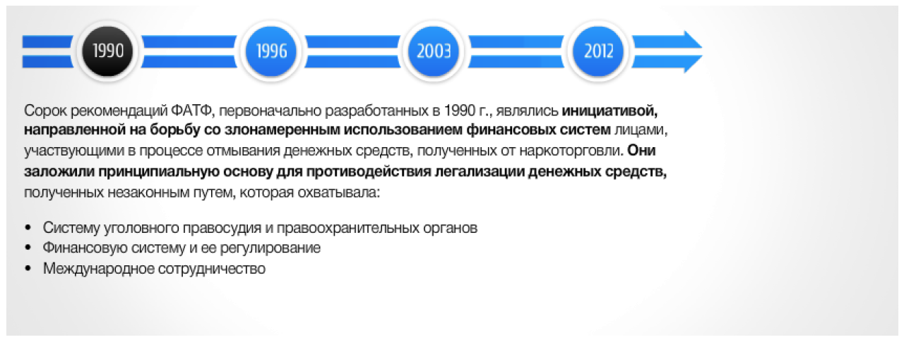
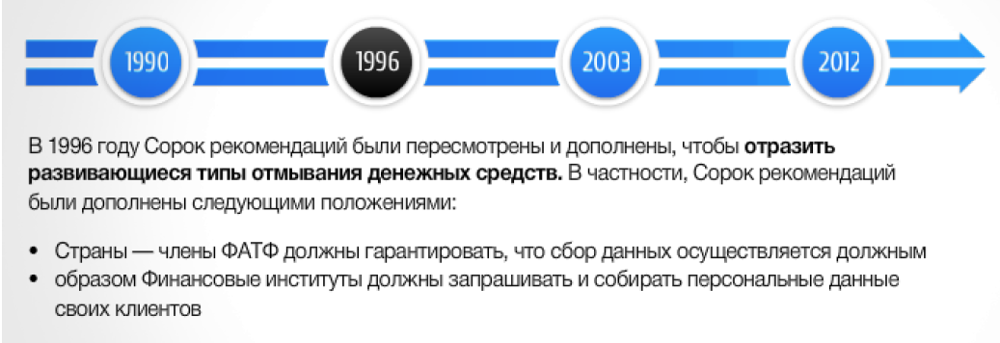
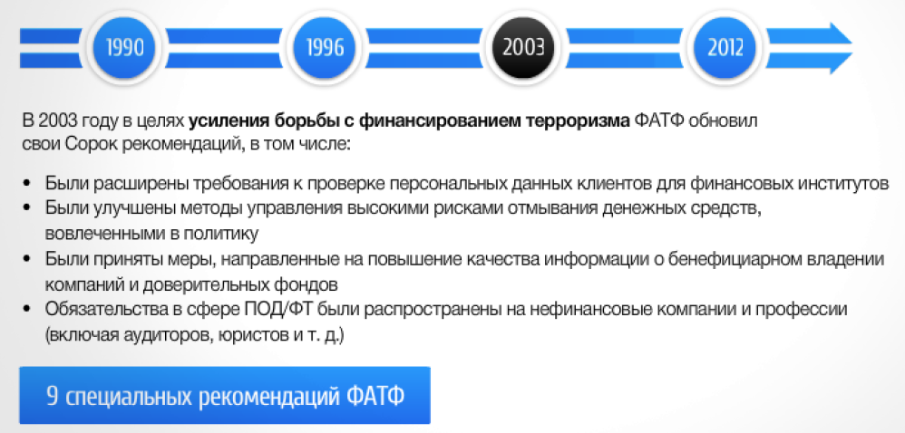
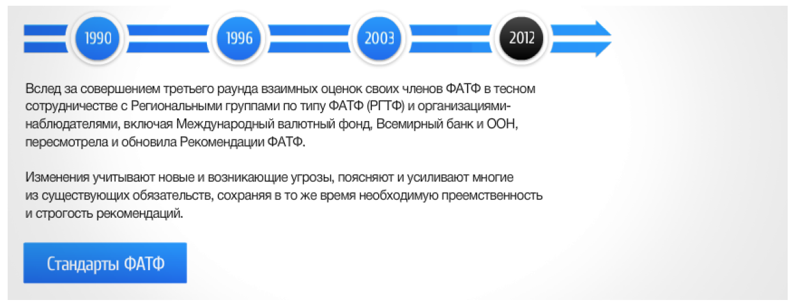

Лекция 4. Международные стандарты ПОД/ФТ/ФРОМУ. Часть 2¶
Рекомендации ФАТФ - Общие положения¶
Современные международные стандарты в сфере ПОД/ФТ включают принципы и нормы, установленные Рекомендациями ФАТФ, Базельским комитетом по банковскому надзору, Вольфсбергской банковской группой (Вольфсбергские принципы), Отделом по контролю зарубежных активов Министерства финансов США (OFAC) Директивами и Конвенциями Европейского союза, Конвенциями и Резолюциями Совета Безопасности ООН и другими стандартами
Các tiêu chuẩn quốc tế hiện đại trong lĩnh vực AML/CFT bao gồm các nguyên tắc và chuẩn mực được thiết lập bởi Khuyến nghị của FATF, Ủy ban Basel về Giám sát Ngân hàng, Nhóm Ngân hàng Wolfsberg (Các nguyên tắc Wolfsberg), Văn phòng Đối ngoại của Bộ Tài chính Hoa Kỳ. Chỉ thị và Công ước Kiểm soát Tài sản (OFAC) của Liên minh Châu Âu, Công ước và Nghị quyết của Hội đồng Bảo an Liên Hợp Quốc và các tiêu chuẩn khác
Рекомендации ФАТФ устанавливают комплексную и последовательную структуру мер, которые странам следует применять для ПОД/ФТ
Khuyến nghị của FATF thiết lập một khuôn khổ các biện pháp toàn diện và nhất quán mà các quốc gia nên thực hiện đối với AML/CFT
Страны имеют различные правовые, административные и оперативные структуры и различные финансовые системы, в связи с чем не могут принимать идентичные меры по противодействию этим угрозам Поэтому странам следует адаптировать к своим конкретным условиям Рекомендации ФАТФ, которые устанавливают международные стандарты
Các quốc gia có cơ cấu pháp lý, hành chính và hoạt động khác nhau cũng như hệ thống tài chính khác nhau và do đó không thể thực hiện các biện pháp giống nhau để chống lại những mối đe dọa này. Do đó, các quốc gia nên điều chỉnh Khuyến nghị của FATF, vốn đặt ra các tiêu chuẩn quốc tế, cho phù hợp với hoàn cảnh cụ thể của họ.
Организации и специализированные органы¶
Международные организации входящие в структуру ПОД/ФТ
Рекомендации ФАТФ. Обзор 40 Рекомендаций ФАТФ¶



Рекомендации ФАТФ. 9 специальных рекомендаций ФАТФ¶
После террористического акта 11 сентября 2001 года в дополнение к Сорока рекомендациям ФАТФ были приняты Восемь специальных рекомендаций ФАТФ, направленных на противодействие финансированию терроризма.
Sau vụ tấn công khủng bố ngày 11 tháng 9 năm 2001, ngoài Bốn mươi Khuyến nghị của FATF, Tám Khuyến nghị Đặc biệt của FATF** đã được thông qua** nhằm chống lại tài trợ cho khủng bố.
Эти рекомендации были приняты на чрезвычайном Пленарном заседании ФАТФ 29-30 октября 2001 года. Позднее, в 2004 году, к ним добавилась девятая специальная рекомендация. С этого момента рекомендации ФАТФ стали именоваться как 40 + 9 рекомендаций. В 2012 г. на базе 40 + 9 рекомендаций была подготовлена обновленная редакция 40 рекомендаций ФАТФ.
Những khuyến nghị này đã được thông qua tại Cuộc họp toàn thể khẩn cấp của FATF vào ngày 29-30 tháng 10 năm 2001. Sau đó, vào năm 2004, khuyến nghị đặc biệt thứ chín đã được bổ sung. Kể từ thời điểm này, các khuyến nghị của FATF được gọi là khuyến nghị 40 + 9. Vào năm 2012, dựa trên khuyến nghị 40 + 9, một phiên bản cập nhật của 40 khuyến nghị của FATF đã được chuẩn bị.

Методология оценки технического соответствия. Рекомендациям ФАТФ и эффективности систем ПОД/ФТ¶
Методология представляет собой основание для проведения оценки технического соответствия новым Рекомендациям ФАТФ, принятым в феврале 2012 года, для изучения уровня эффективности страховой системы противодействия отмыванию денег и финансированию терроризма (ПОД/ФТ)
Предназначена для оказания содействия экспертам-оценщикам при проведении оценки соблюдения страной международных стандартов ПОД/ФТ
Отражает требования, изложенные в Рекомендациях ФАТФ и Пояснительных записках, которые устанавливают международный стандарт противодействия отмыванию денег и финансированию терроризма и распространения ОМУ, не изменяя и не превышая эти требования.
Phương pháp này cung cấp cơ sở để đánh giá sự tuân thủ kỹ thuật với Khuyến nghị mới của FATF được thông qua vào tháng 2 năm 2012 nhằm kiểm tra mức độ hiệu quả của hệ thống bảo hiểm chống rửa tiền và chống tài trợ cho khủng bố (AML/CFT).
Được thiết kế để hỗ trợ các chuyên gia đánh giá trong việc đánh giá sự tuân thủ của một quốc gia với các tiêu chuẩn AML/CFT quốc tế
Phản ánh các yêu cầu được nêu trong Khuyến nghị và Ghi chú Giải thích của FATF, trong đó đặt ra tiêu chuẩn quốc tế về chống rửa tiền và tài trợ cho khủng bố cũng như phổ biến vũ khí hủy diệt hàng loạt mà không thay đổi hoặc vượt quá các yêu cầu này.
При подготовке Методологии был использован опыт проведения оценок соответствия более ранним версиям Рекомендаций ФАТФ, накопленный ФАТФ, Региональными группами по типу ФАТФ (РГТФ), Международным валютным фондом и Всемирным банком
Khi chuẩn bị Phương pháp luận, kinh nghiệm tiến hành đánh giá tuân thủ các phiên bản trước của Khuyến nghị FATF do FATF, các Nhóm khu vực loại FATF (RGTF), Quỹ Tiền tệ Quốc tế và Ngân hàng Thế giới tích lũy đã được sử dụng
Компоненты методологии оценки¶
Для четвертого раунда взаимных оценок ФАТФ приняла взаимодополняющие подходы к оценке технического соответствия Рекомендациям ФАТФ и оценке того, является ли система ПОД/ФТ эффективной и до какой степени.
Đối với vòng đánh giá chung thứ tư, FATF đã áp dụng các phương pháp bổ sung để đánh giá sự tuân thủ kỹ thuật với Khuyến nghị của FATF và đánh giá liệu hệ thống AML/CFT có hiệu quả hay không và ở mức độ nào.
Таким образом, Методология содержит два компонента:
Оценка технического соответствия касается конкретных требований Рекомендаций ФАТФ, главным образом того, как они соотносятся с соответствующей правовой и институциональной системой страны; а также полномочия и процедуры компетентных органов. Они представляют собой основные структурные элементы системы ПОД/ФТ.
Оценка эффективности радикально отличается от оценки технического соответствия. Она предполагает оценку достаточности применения Рекомендаций ФАТФ и определяет степень достижения страной определенного набора результатов, которые являются главными для построения надежной системы ПОД/ФТ.
Vì vậy, Phương pháp này có hai thành phần:
Đánh giá tuân thủ kỹ thuật giải quyết các yêu cầu cụ thể của Khuyến nghị FATF, chủ yếu là chúng liên quan như thế nào đến khuôn khổ pháp lý và thể chế có liên quan của quốc gia; quyền hạn, thủ tục của cơ quan có thẩm quyền. Chúng đại diện cho các thành phần cấu trúc chính của hệ thống AML/CFT.
Đánh giá hiệu suất hoàn toàn khác với đánh giá tuân thủ kỹ thuật. Nó liên quan đến việc đánh giá mức độ áp dụng đầy đủ các Khuyến nghị của FATF và xác định mức độ mà một quốc gia đã đạt được một loạt kết quả nhất định, đây là chìa khóa để xây dựng một hệ thống AML/CFT đáng tin cậy.
Таким образом, в центре внимания оценки эффективности находится степень достижения правовой и институциональной системой ожидаемых результатов.
Vì vậy, trọng tâm của việc đánh giá hiệu quả hoạt động là ở mức độ mà hệ thống pháp luật và thể chế đạt được các kết quả dự kiến.
Критерии технического соответствия. Критерии эффективности¶
Методология оценки технического соответствия рекомендациям ФАТФ и эффективности систем ПОД/ФТ
Phương pháp đánh giá sự tuân thủ kỹ thuật với các khuyến nghị của FATF và tính hiệu quả của hệ thống AML/CFT
Рейтинги технического соответствия |
||
|---|---|---|
Соответствует |
C |
Недостатки отсутствуют. |
В значительной степени соответствует |
LC |
Имеются только незначительные недостатки. |
Частично соответствует |
РС |
Имеются умеренные недостатки. |
Не соответствует |
NC |
Имеются серьезные недостатки. |
Неприменимо |
НА |
Требование неприменимо из-за структурных, правовых или институциональных особенностей страны. |
При определении уровня недостатков по каждой Рекомендации эксперты должны оценить, с учётом контекста страны, количество и относительную важность выполненных или не выполненных критериев.
Khi xác định mức độ thiếu sót của từng Khuyến nghị, người đánh giá nên đánh giá liệu có tính đến bối cảnh quốc gia, số lượng và tầm quan trọng tương đối của những hoạt động đó được thực hiện hay không tiêu chí hoàn thành.
Рейтинги эффективности |
|
|---|---|
Высокий уровень эффективности |
Непосредственный Результат достигнут в очень большой степени. Требуются незначительные улучшения. |
Значительный уровень эффективности |
Непосредственный Результат достигнут в большой степени. Требуются умеренные улучшения. |
Умеренный уровень эффективности |
Непосредственный Результат достигнут в некоторой степени. Требуются значительные улучшения. |
Низкий уровень эффективности |
Непосредственный Результат не достигнут или достигнут в ничтожной степени. Требуются фундаментальные улучшения. |